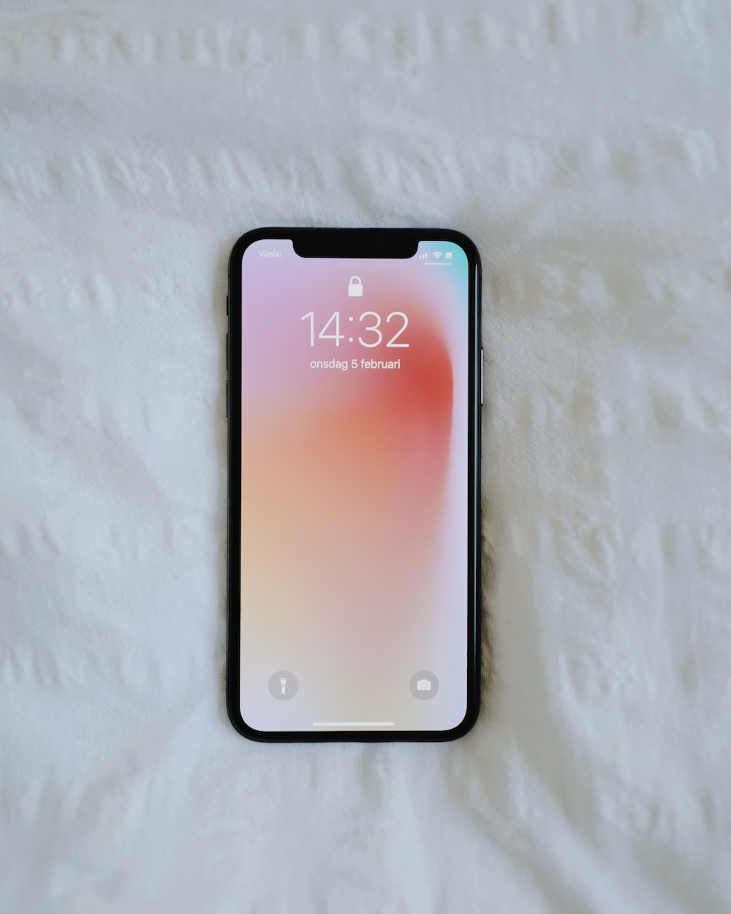

Case Study Between Google Lens and MobileNet
Google Lens

VS
MobileNet
-
Test Image -

- Test Image -
- Test Image -
- Test Image -
-
Test Image -

- Test Image -
- Test Image -
- Test Image - 
-
Test Image -

Output on Google Lens - Water Bottle
Output on MobileNet - Can
Result -
Google Lens is more Accurate.
Output on Google Lens - The Secret Garden
Output on MobileNet - Book
Result -
Both are right but can be concluded as Google Lens is more Accurate.
Output on Google Lens - Coffee Cup
Output on MobileNet - Coffee cup or Tea cup
Result -
MobileNet is much more Accurate.
Output on Google Lens - Eraser Kit
Output on MobileNet - Eraser
Result -
MobileNet is Accurate.
Output on Google Lens - Camlin Geometry Box
Output on MobileNet - Box
Result -
Google Lens is Accurate.
Output on Google Lens - LG Gram 17
Output on MobileNet - Keyboard, Television, Screen
Result -
Both are slightly accurate.
Output on Google Lens - Parker
Output on MobileNet - Pen, Tool
Result -
MobileNet is more Accurate.
Output on Google Lens - Phone
Output on MobileNet - Device, screen
Result -
Google Lens is more Accurate.
Output on Google Lens - Spoon
Output on MobileNet - Spoon
Result -
Both gave the same results
Conclusion
I have checked the accuracy rate of Google Lens and MobileNet through total 9 images.
Out of these images, 5 images were correctly identified by Google Lens. Other than this the Google
lens also showed some accurate and related images.
The rest 4 images were accurately identified by MobileNet model.
So, finally, I come upto this conclusion that Google Lens is more accurate in terms of Image Identification.